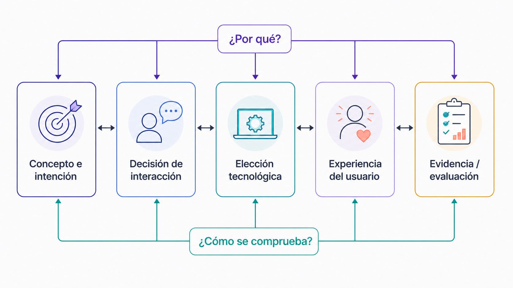
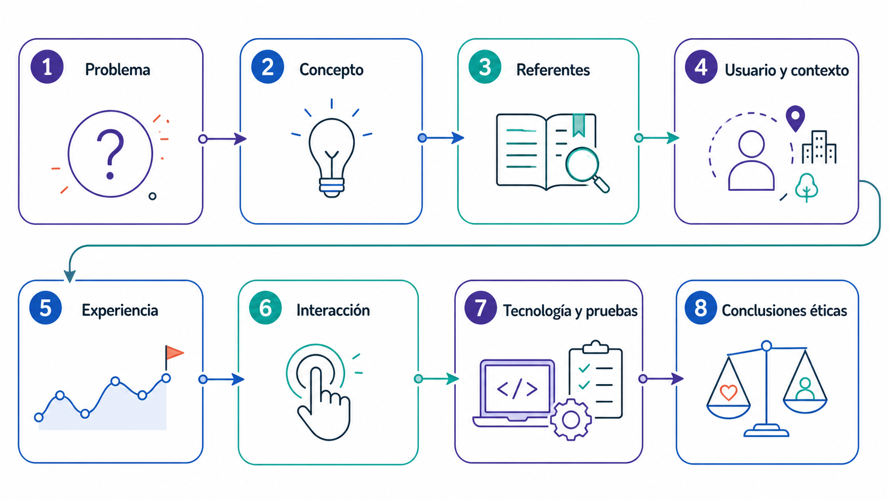
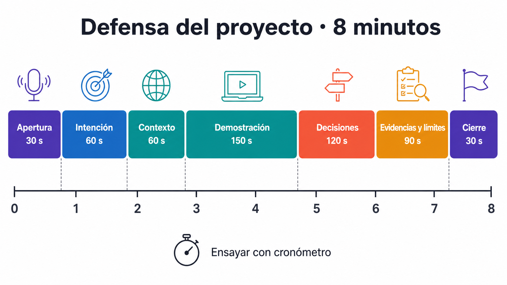

Presentación teórica del proyecto final
Cómo presentar y defender una experiencia inmersiva: dossier, argumentación crítica y conexión concepto-interacción-tecnología.
Objetivos de aprendizaje
- Estructurar la presentación de una experiencia inmersiva.
- Defender decisiones de diseño con argumentos coherentes.
- Articular concepto, interacción, tecnología, UX e impacto ético.
De la descripción a la argumentación
Una defensa no enumera componentes: explica por qué cada decisión contribuye a la experiencia buscada. La estructura mínima es intención, decisión, evidencia y consecuencia para el usuario. Una elección técnica solo es relevante cuando se conecta con el concepto, la interacción, la accesibilidad o el rendimiento.

Cadena de argumentos
| Afirmación | Evidencia necesaria | Pregunta de control |
|---|---|---|
| La interacción refuerza el concepto | Prueba de usuario, observación o comparación | ¿Qué cambia en la experiencia gracias a esta interacción? |
| La tecnología es adecuada | Restricciones, rendimiento y alternativa descartada | ¿Por qué esta solución y no otra más simple? |
| La experiencia es accesible y responsable | Decisiones de confort, acceso, datos e inclusión | ¿Quién puede quedar excluido y cómo se reduce esa barrera? |
Secuencia del dossier
La presentación debe avanzar desde el problema y el contexto hacia las decisiones, las pruebas y las conclusiones. Cada diapositiva cumple una función; si no ayuda a comprender o verificar el proyecto, debe simplificarse o pasar al anexo.

Actividad 1 · Storyboard de la presentación · 25 min
- Escribe una frase central para cada una de las ocho etapas del diagrama.
- Asigna una evidencia visual o técnica a cada etapa.
- Elimina repeticiones y limita cada etapa a una sola idea principal.
- Comprueba que concepto, interacción, tecnología, UX y ética aparecen conectados.
Actividad 2 · Clínica de argumentos · 25 min
- Selecciona tres decisiones importantes del proyecto.
- Formula para cada una una afirmación, una evidencia y una consecuencia para el usuario.
- Intercambia las cadenas con otra persona y marca cualquier salto lógico.
- Revisa las cadenas para que puedan defenderse en menos de un minuto cada una.
Revisión por pares y ensayo
- Presentación de cinco minutos sin interrupciones.
- Dos minutos de preguntas centradas en decisiones y evidencias.
- Respuesta con tres criterios: claridad, coherencia y trazabilidad.
- Una revisión final del inicio, la conclusión y el plan B.

Confirma cuando hayas completado la actividad central
La visita a la página se registra como progreso de lectura. Esta confirmación registra la sesión como completada.